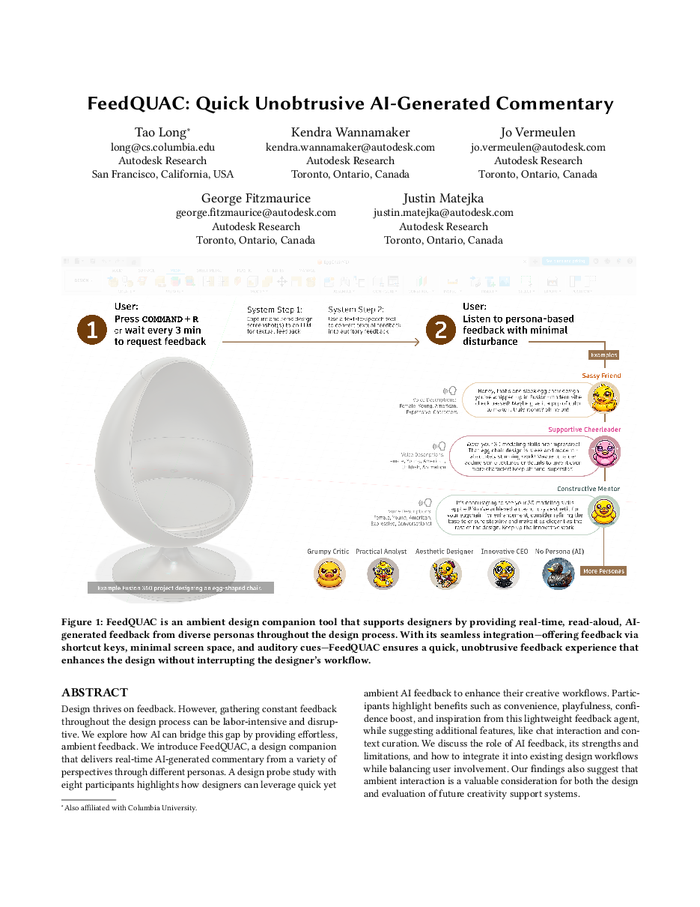
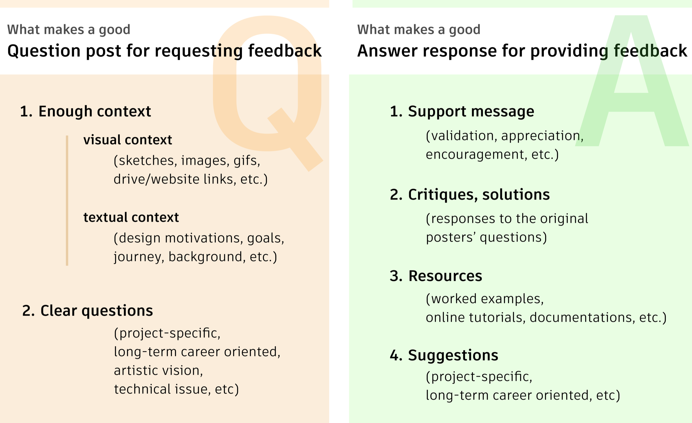
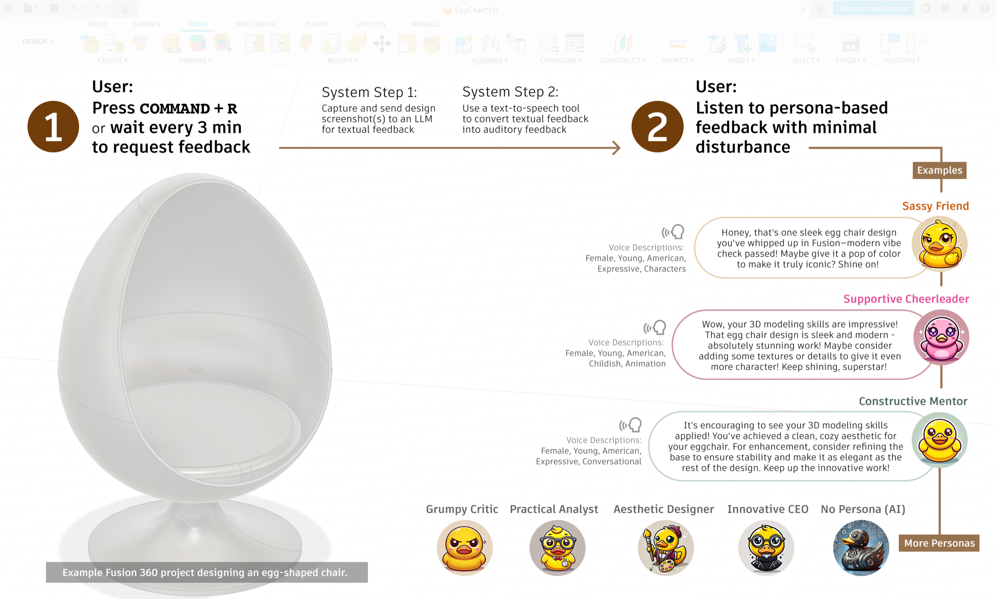
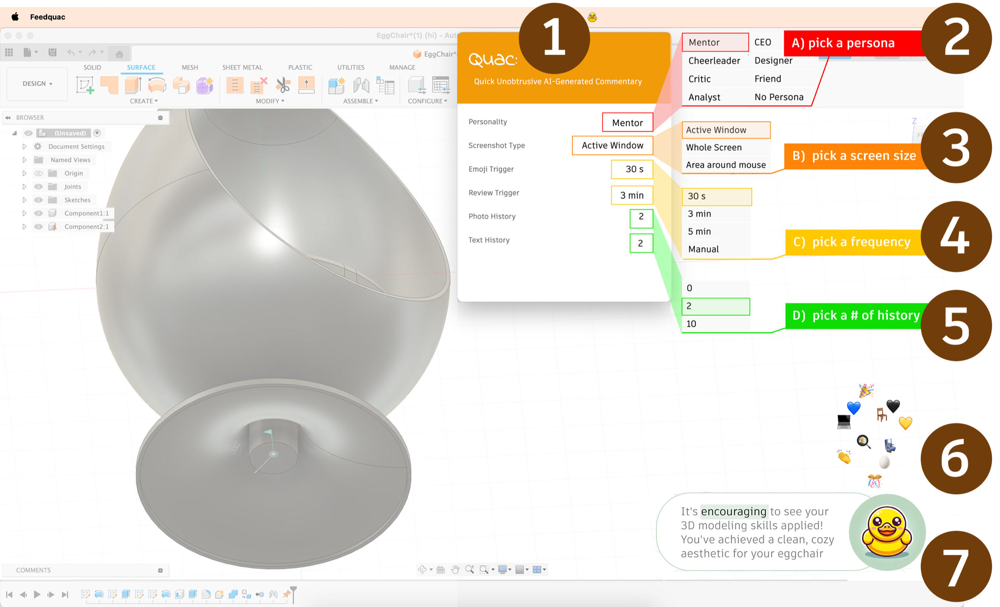
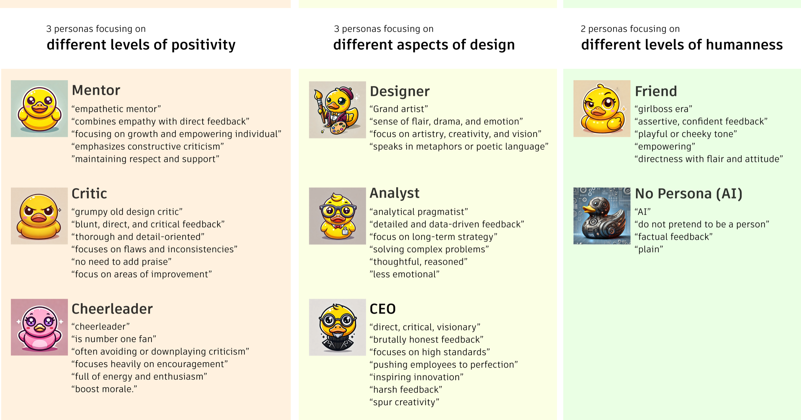
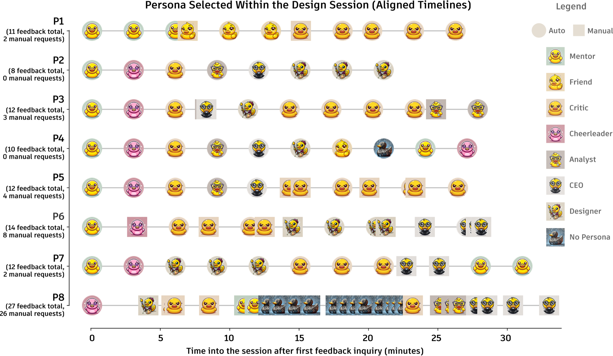
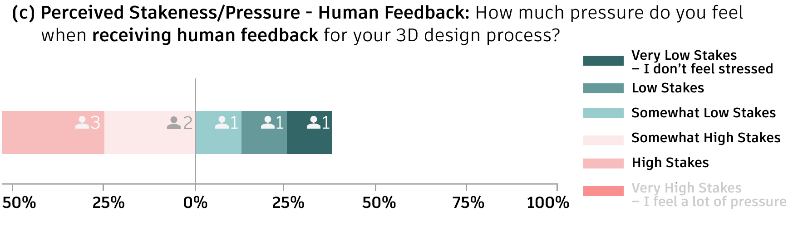
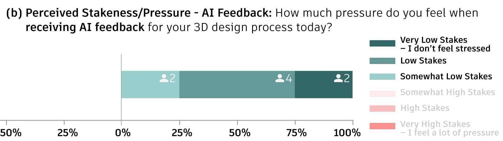
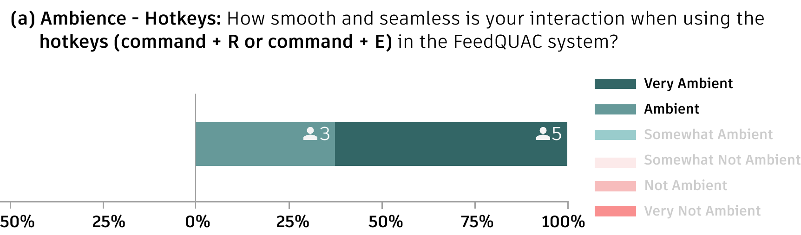
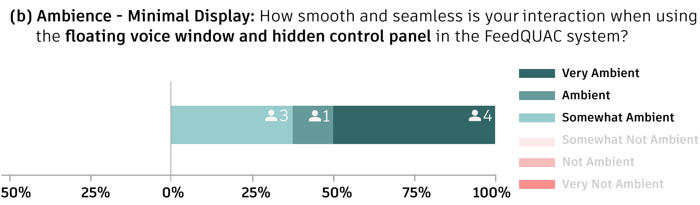

FeedQUAC: Quick UnobtrusiveAI-Generated Commentary
Autodesk Research & Columbia University
HAI 2025

Design thrives on feedback, but constant feedback is labor-intensive and disruptive.
— FeedQUAC delivers it as ambient, read-aloud commentary from personas, one hotkey away.
1/ The Feedback Gap & Design Guidelines
Gathering feedback throughout the design process is valuable but slow, effortful, and interruptive. We asked how AI can provide effortless, ambient feedback to 3D and CAD designers without pulling them out of their work.


Summary
Human feedback is rich but slow and socially costly to request. The guidelines point toward feedback that is always available, context-aware, ambient, and low-stakes.
2/ FeedQUAC: An Ambient Design Companion
FeedQUAC sits beside the design tool and comments on what is on screen, in the voice of a persona you choose.


Summary
Delivery and content play complementary roles: a playful, low-friction delivery lowers the emotional barrier to feedback, while substantive content provides the value.
3/ Design Probe Study & Discussion
Eight 3D designers used FeedQUAC in 25-minute design sessions as a design probe. We looked at how they requested feedback and how the lightweight, ambient format shaped their experience.





Contributions
- Six design guidelines for ambient AI feedback companions in visual authoring environments, from a formative analysis of 3D design forums.
- FeedQUAC, a lightweight design companion offering always-available, ambient, and playful feedback across eight personas.
- Exploratory results from eight 3D designers showing perceived usefulness and a lower-stakes feedback experience.
BibTeX
If this work is useful to you, here is a citation you can copy.
@inproceedings{long2025feedquac,
author = {Long, Tao and Wannamaker, Kendra and Vermeulen, Jo and Fitzmaurice, George and Matejka, Justin},
title = {FeedQUAC: Quick Unobtrusive AI-Generated Commentary},
year = {2025},
isbn = {9798400721786},
publisher = {Association for Computing Machinery},
address = {New York, NY, USA},
url = {https://doi.org/10.1145/3765766.3765861},
doi = {10.1145/3765766.3765861},
booktitle = {Proceedings of the 13th International Conference on Human-Agent Interaction},
pages = {452–455},
numpages = {4},
location = {Yokohama, Japan},
series = {HAI '25}
}